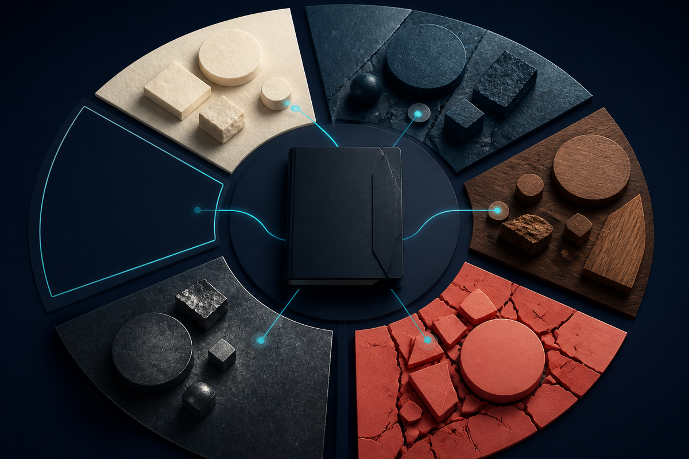

Keep the real inquiry
Preserve audience, decision use, scope, time horizon, exclusions, access, and evidence burden before retrieval begins.
Deep research · multi-source investigation
OMNARA investigates consequential questions across many sources and produces long-form, citation-audited reports. Its campaign vault keeps the inquiry, searches, source states, evidence notes, claims, contradictions, coverage, budgets, stopping decision, and resume point inspectable.
Standalone public edition 1.0.0 | MIT License | Individual skill source, not a universal plugin claim

The product
For analysts, researchers, investigators, product and policy teams, and anyone whose decision deserves more than a pile of search results.
Preserve audience, decision use, scope, time horizon, exclusions, access, and evidence burden before retrieval begins.
Discovered is not inspected. Opened is not deeply read. A full evidence note earns that stronger state.
Claims, contradictions, gaps, citations, limitations, budgets, refresh triggers, and resume points travel with the prose.
Campaign loop
Stabilize inquiry, use, scope, freshness, authority, and burden.
Define coverage loci, explanations, source ecosystems, and disconfirming questions.
Ledger candidates, deeply read the evidence-bearing subset, and write notes.
Build claim and contradiction ledgers; pursue decision-relevant gaps.
Check citation mechanics and semantic support separately, then hand off limits.
Inputs and outputs
Question, audience, decision use, scope, time horizon, required evidence, exclusions, access authority, budget, and deliverable.
Research brief, query/source/claim ledgers, evidence notes, coverage matrix, contradiction map, digest, report, audit dispositions, counts, limits, and resume point.
Honest boundaries
Omnara does not guarantee truth, exhaustive coverage, source access, fixed scale, semantic entailment, professional advice, or host activation. Local helpers check structure and citation mechanics; a capable reviewer must still judge evidence and claims.